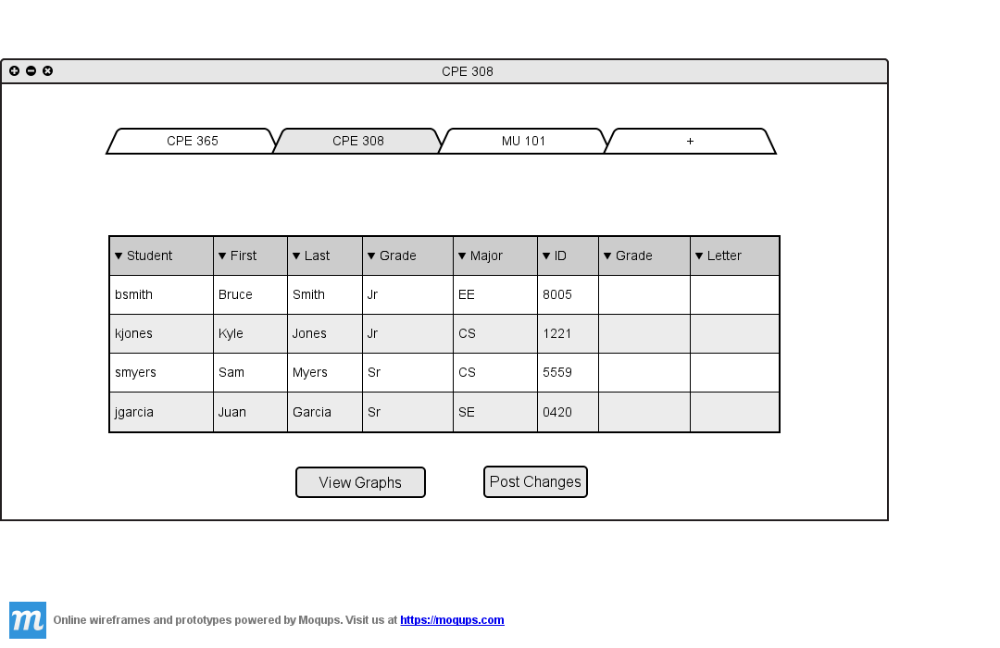
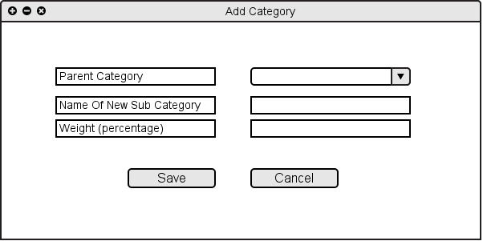
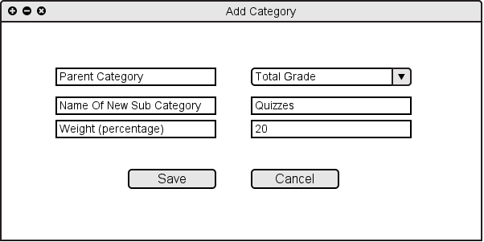
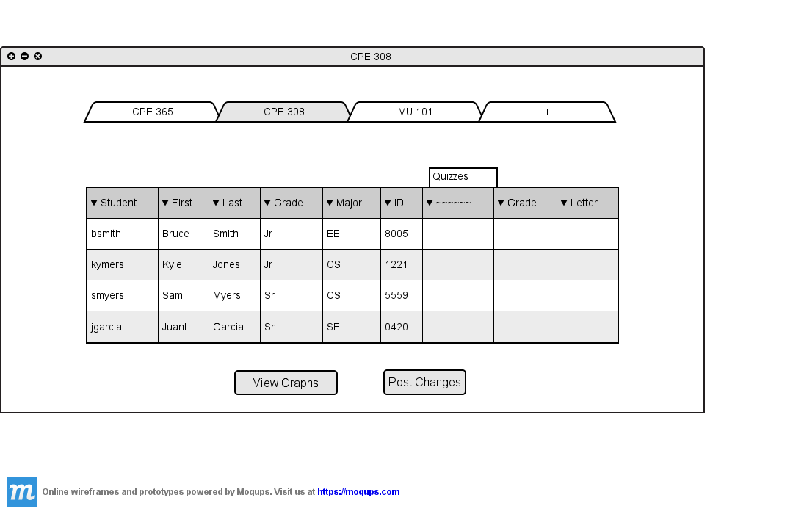

2.4.1 Add Category
If the user wants to add a category of assignments in the spreadsheet shown in Figure 2.4.1 A

Figure 2.4.1 A: Spreadsheet Without Category
The user chooses "Add Category" from "Assignments" menu or from "Assignments/Categories...", the system shows Figure 2.4.1 A.
Since the user can create several subcategories for the assignments, the user should specify the parent category of the new category. The highest lever of categories is named
"Total Grade", and it has the 100% of the grade for each class. The assignments associated to the subcategories of "Total Grade" are used to determing the final grade of students. Each subcategory is assigned a percentage of its parent category, which in turn can be divided among assignments or subcategories.

Figure 2.4.1 B: Adding Category
The user chooses the parent category from the "Name Of Parent Category" drop down list.
Then, the user specifies the name of the new category, and he/she specifies the weight of the new category.

Figure 2.4.1 C: Adding Category Filled
By clicking the "Save" button, the new category is added to the spreadsheet and the list of categories.

Figure 2.4.1 D: Category Added to Spreadsheet
Prev: Manage Assignments/Categories
| Next: Edit Categories
| Up: Manage Assignments/Categories
| Top: index